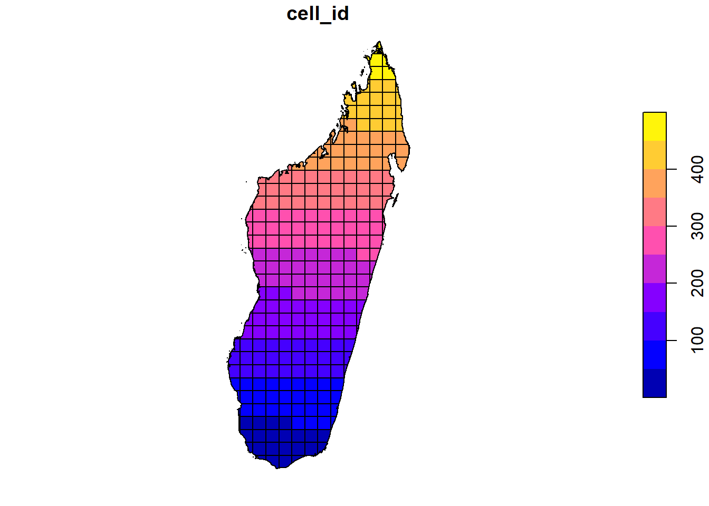
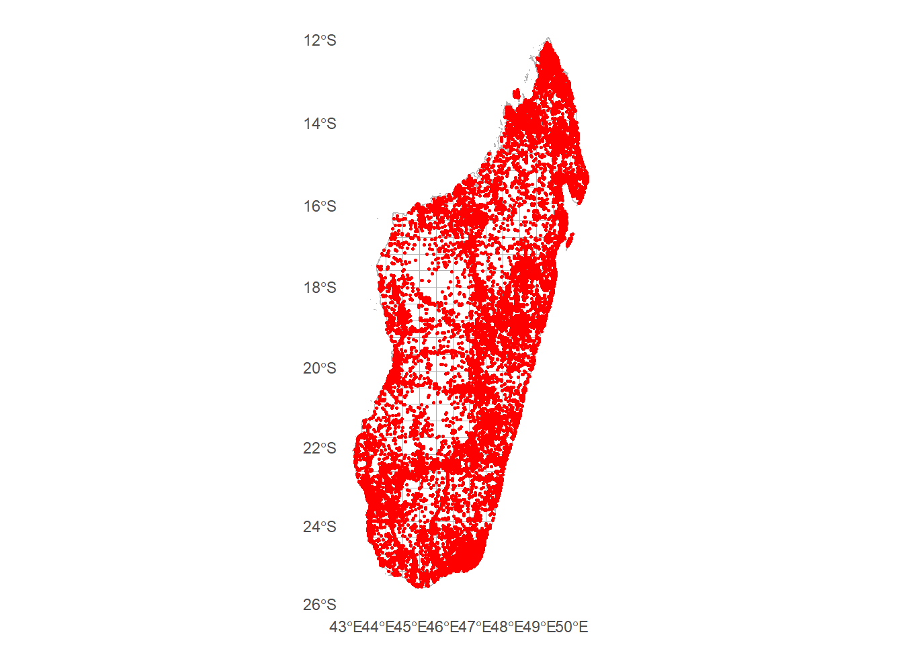
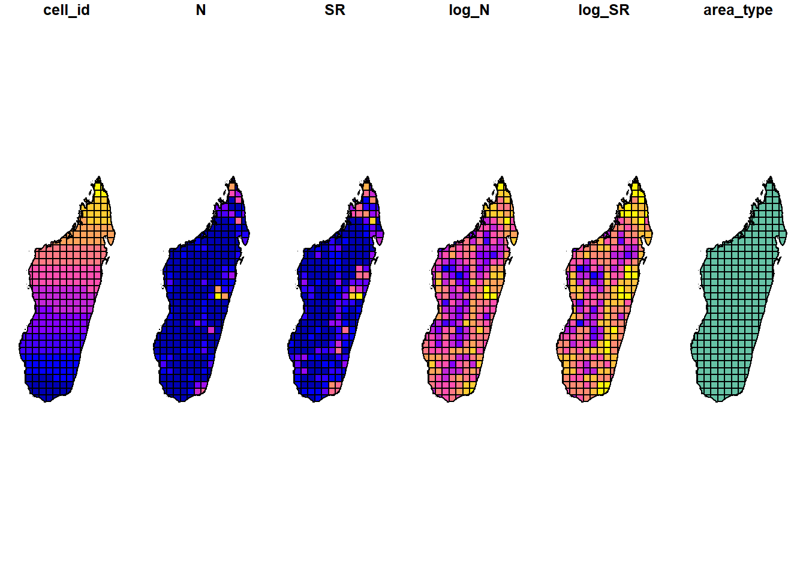
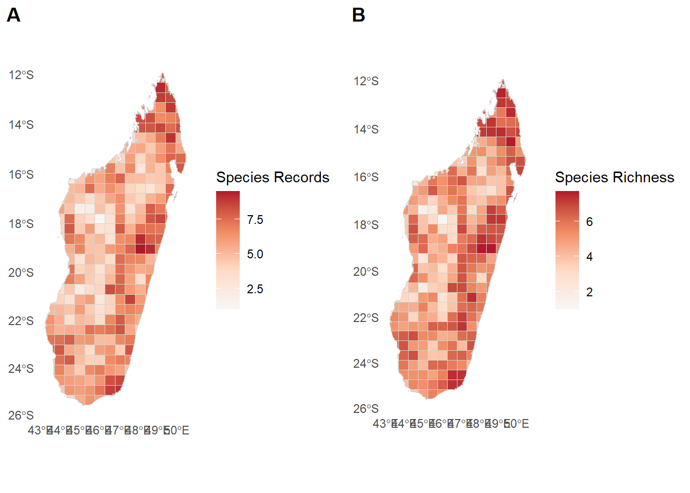
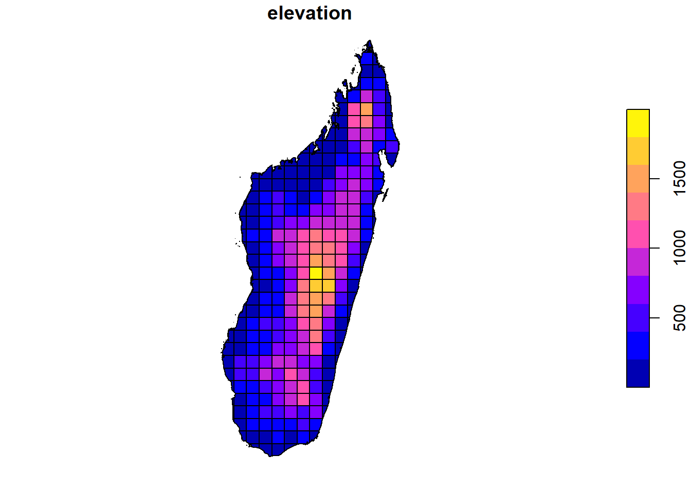
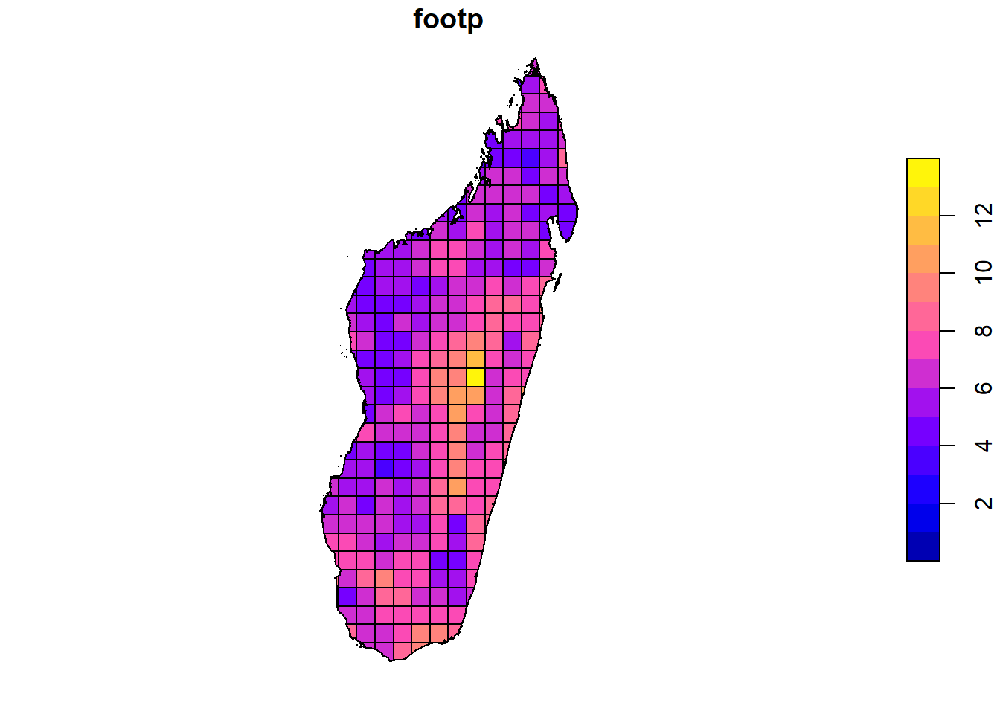
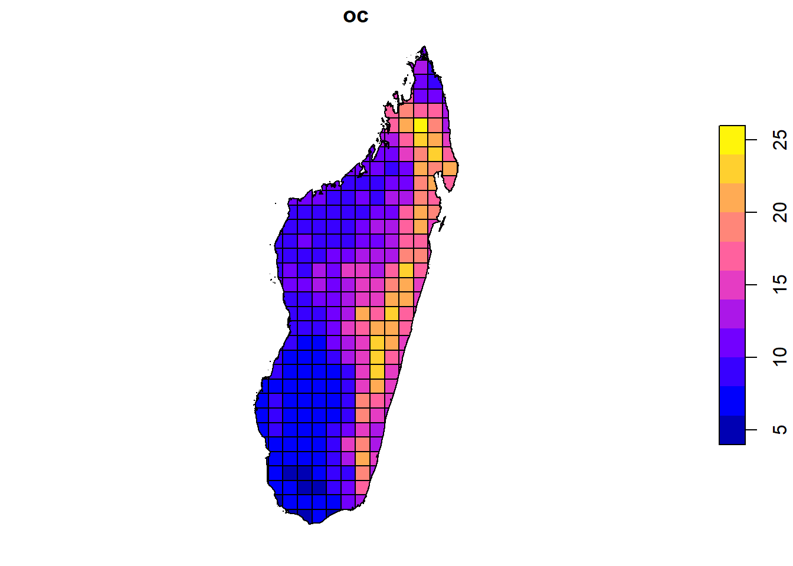
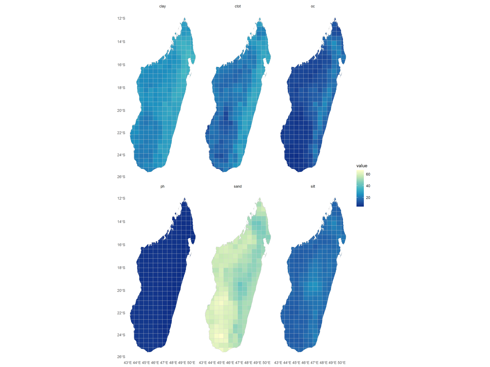

rm(list=ls())
gc() used (Mb) gc trigger (Mb) max used (Mb)
Ncells 844131 45.1 1369631 73.2 1369631 73.2
Vcells 1657922 12.7 8388608 64.0 2792947 21.4Make sure you have read the part about projections and CRS from the introduction page before starting.
We will start our code by first ensuring that our R environment and memory is clean and empty, and then we will install and load R libraries (Section 1) and set up variables in R for file paths or frequently used objects (Section 2).
rm(list=ls())
gc() used (Mb) gc trigger (Mb) max used (Mb)
Ncells 844131 45.1 1369631 73.2 1369631 73.2
Vcells 1657922 12.7 8388608 64.0 2792947 21.4I wrote a function that I use in most of my projects to download and load R libraries. Usually I would save the function into it’s own R-script and load it using the source() function. However, for the purporse of this tutorial it’s best to see the actual function and try to understand what it does. It’s generally a good idea to do that for functions that have not been written by yourself in R. While the function I wrote is useful when you work a lot in R, you can also do the same job by hand using multiple lines of code: install.packages(“package1”), install.packages(“package2”), …, library(package1), library(package2), and so on.
# ------------------------------------------------------------------- #
# 1. Install packages if not already installed and load them
# ------------------------------------------------------------------- #
install_if_missing <-
function(packages) {
missing <-
packages[!packages %in% rownames(installed.packages())]
# first install the missing libraries
if (length(missing) > 0) {
install.packages(
missing,
repos = "https://cloud.r-project.org"
)
}
# now load the libraries into our active R session
x <- suppressPackageStartupMessages(
lapply(packages, require, character.only = TRUE)
)
rm(x)
}# list all packages needed for the code
package_list <-
c(
"here",
"dplyr",
"ggplot2",
"sf",
"terra",
"tidyterra",
"geodata",
"skimr",
"cowplot",
"tmap"
)# run the function - may require your input in the console
install_if_missing(package_list)
# delete the list object from our r environment
rm(package_list)It’s good practice to collect and set up some variables that we can use in our code at the top of each script. In that way, if you want to change something, it’s sufficient to do it once at the top of the script, instead of multiple times for each occurrence in the code. Usually I do it for character strings that I am using multiple times, data paths for input reading/output saving and plotting themes or color vectors. You can save a lot of time during post-processing if you set up your code in a smart way.
## Data paths:
path_proj <- here("01_simple_mapping")
path_data <- here(path_proj, "data")
path_geodata <- here(path_data, "geodata")
path_gbif <- here(path_data, "gbif_occ_cleaned.rds")
path_env <- here(path_data, "env_stack_behrm.rds")
path_adm <- here(path_geodata, "gadm/gadm41_MDG_3_pk.rds")
## Character strings:
wkt_behrm <- 'PROJCS["World_Behrmann",
GEOGCS["WGS 84",
DATUM["WGS_1984",
SPHEROID["WGS 84",6378137,298.257223563,
AUTHORITY["EPSG","7030"]],
AUTHORITY["EPSG","6326"]],
PRIMEM["Greenwich",0],
UNIT["Degree",0.0174532925199433]],
PROJECTION["Cylindrical_Equal_Area"],
PARAMETER["standard_parallel_1",30],
PARAMETER["central_meridian",0],
PARAMETER["false_easting",0],
PARAMETER["false_northing",0],
UNIT["metre",1,
AUTHORITY["EPSG","9001"]],
AXIS["Easting",EAST],
AXIS["Northing",NORTH],
AUTHORITY["ESRI","54017"]]'
## Plotting themes:
my_theme <-
theme(
plot.background = element_rect(fill = "#ffffff"),
panel.background = element_rect(fill = "#ffffff"),
panel.grid = element_blank(),
line = element_blank(),
rect = element_blank())if (!dir.exists(path_geodata)) {
dir.create(path_geodata, recursive = TRUE)
}
geodata_path(here(path_geodata))In this part we will extract different types of data from our geographical data (species records and environmental variables). We can do this to any kind of spatial data. Most commonly one would want to extract environmental data for certain locations (areas, grid cells, species occurrence points), or calculate some statistics on the species data over a certain area. Below are examples for both situations:
# our gbif data frame from script 02
gbif_dat <- readRDS(path_gbif)
# administrative borders of Madagascar from script 01
adm3 <- readRDS(path_adm)We need to overlay a rectangular grid or administrative borders to calculate summary statistics for our gbif data across space.
adm_sf <-
adm3 %>%
select("NAME_1", "NAME_2", "NAME_3") %>%
st_as_sf() %>%
st_transform(crs = wkt_behrm) %>%
mutate(
area_type = "adm"
)Let’s create a grid. Below our cellsize is 50,000 m x 50,000 m ()
square_grid <-
st_make_grid(
x = adm_sf,
what = "polygons",
cellsize = c(50000,50000)
) %>%
st_sf(
area_type = "cell",
geom = .,
cell_id = 1:length(.)
)
sf_use_s2(FALSE)Spherical geometry (s2) switched offgrid_50 <-
square_grid %>%
st_cast("POLYGON") %>%
st_intersection(., adm_sf %>% select(geometry) %>% summarise()) %>%
distinct() %>%
st_make_valid()Warning: attribute variables are assumed to be spatially constant throughout
all geometriestable(grid_50$area_type)
cell
294 plot(grid_50["cell_id"])
Merge species data and grid to the same sf object - we need to add the cell_id from the grid to our species data. since our species data is very large, we will reduce it first for computing SR and make it big afterwards again.
dat_sf <-
gbif_dat %>%
st_as_sf(
coords = c("decimalLongitude", "decimalLatitude"),
crs = "EPSG:4326"
) %>%
st_transform(., crs = st_crs(grid_50))
dat_grid <-
st_join(grid_50, dat_sf, join = st_intersects)
ggplot() +
geom_sf(data = grid_50, fill = NA, color = "grey70") +
geom_sf(data = dat_sf, color = "red", size = 0.5) +
my_theme
Here is where the cell_id we assigned earlier comes in handy. We can now group our data by cell id and sum up the number of records and distinct species per cell - giving us the species richness (SR) and record numbers (N).
Since many entries in GBIF are not determined to species-level, it might make sense to also calculate genus richness or family richness. However, this of course only makes sense when working with data from more than one genus.
SR <-
dat_grid %>%
st_drop_geometry() %>%
group_by(cell_id) %>%
summarise(
N = sum(!is.na(gbifID)),
SR = n_distinct(species, na.rm = TRUE)
) %>%
mutate(
log_N = log(N),
log_SR = log(SR)
) %>%
right_join(grid_50) %>%
st_as_sf()Joining with `by = join_by(cell_id)`plot(SR)Warning in classInt::classIntervals(v0, min(nbreaks, n.unq), breaks, warnSmallN
= FALSE): var has infinite values, omitted in finding classes
Warning in classInt::classIntervals(v0, min(nbreaks, n.unq), breaks, warnSmallN
= FALSE): var has infinite values, omitted in finding classes
p1 <- ggplot() +
geom_sf(
data = SR,
aes(fill = log_N),
color = NA
) +
geom_sf(
data = grid_50,
color = "lightgrey",
size = 0.2,
fill = NA
) +
scale_fill_distiller(
palette = "RdBu",
limit = c(1, max(SR$log_N)),
values = c(-1, 1),
na.value = "darkgrey"
) +
my_theme +
labs(fill = "Species Records")p2 <- ggplot() +
geom_sf(
data = SR,
aes(fill = log_SR),
color = NA
) +
geom_sf(
data = grid_50,
color = "lightgrey",
size = 0.2,
fill = NA
) +
scale_fill_distiller(
palette = "RdBu",
limit = c(1, max(SR$log_SR)),
values = c(-1, 1),
na.value = "darkgrey"
) +
my_theme +
labs(fill = "Species Richness")plot_grid(p1, p2, labels = c("A", "B"))
We can also extract our environmental data from the grid cells. For that we have to decide how we want to summarize the data within one grid cell to a single value. To keep it simple, let’s just average them for now.
env_stack_behrm <-
readRDS(path_env)
env_stack_behrm # a terra SpatRaster object class : SpatRaster
size : 1648, 704, 14 (nrow, ncol, nlyr)
resolution : 1000.041, 1000.041 (x, y)
extent : 4167068, 4871097, -3161673, -1513606 (xmin, xmax, ymin, ymax)
coord. ref. : World_Behrmann (ESRI:54017)
source(s) : memory
names : elevation, brd, ctot, clay, oc, ph, ...
min values : -3, 120.470604, 2.204974, 15.032548, 2.366453, 4.449746, ...
max values : 2668.647949, 200.001465, 56.831142, 40.924744, 44.473553, 7.726542, ...We will compute our means directly on the raster stack but then convert the object into an sf-object for easier plotting and handling in general.
env_sf <-
env_stack_behrm %>%
# compute mean env values per 50x50 km cell
terra::extract(., grid_50, fun = mean, na.rm = TRUE) %>%
# bind it back to gether with the cells
cbind(grid_50, .) %>%
# convert it back to sf
st_as_sf()
# plot the gridded env data: for example elevation
plot(env_sf["elevation"])
# human footprint
plot(env_sf["footp"])
# soil organic carbon
plot(env_sf["oc"])
env_sf_long <-
env_sf %>%
pivot_longer(cols = 6:11)
env_sf_long %>%
ggplot()+
geom_sf(
data = env_sf_long, aes(fill = value),
color = NA) +
geom_sf(
data = grid_50,
color = "lightgrey",
size = 0.2,
fill = NA) +
scale_fill_distiller(palette = "YlGnBu") +
facet_wrap(~ name)+
my_theme
We could now combine our gridded gbif data (species richness) with our environmental data as follows:
env_sr_dat <-
env_sf %>%
st_drop_geometry() %>%
full_join(SR)Joining with `by = join_by(area_type, cell_id)`saveRDS(env_sr_dat, here(path_data, "SR_env_sf.rds"))We can now use this data for ecological models. For example just like this:
mod <-
lm(SR ~ elevation + prec,
data = env_sr_dat %>% st_drop_geometry,
na.action = "na.exclude")
summary(mod)
Call:
lm(formula = SR ~ elevation + prec, data = env_sr_dat %>% st_drop_geometry,
na.action = "na.exclude")
Residuals:
Min 1Q Median 3Q Max
-509.2 -277.4 -135.9 154.0 1700.3
Coefficients:
Estimate Std. Error t value Pr(>|t|)
(Intercept) 89.78499 72.38546 1.240 0.21585
elevation 0.21716 0.06038 3.596 0.00038 ***
prec 0.12006 0.04147 2.895 0.00408 **
---
Signif. codes: 0 '***' 0.001 '**' 0.01 '*' 0.05 '.' 0.1 ' ' 1
Residual standard error: 428.9 on 288 degrees of freedom
(3 observations deleted due to missingness)
Multiple R-squared: 0.064, Adjusted R-squared: 0.0575
F-statistic: 9.847 on 2 and 288 DF, p-value: 7.301e-05gbif_env <-
env_stack_behrm %>%
# compute mean env values per 50x50 km cell
terra::extract(., dat_sf) %>%
# bind it back to gether with the cells
cbind(dat_sf, .) %>%
# convert it back to sf
st_as_sf()Now we have the environmental data for the exact coordinates of the species. Keep in mind that the resolution of the envronmental data is bigger than that of a single species occurrence and the same values apply for multiple occurrence records in the same area.
head(gbif_env)Simple feature collection with 6 features and 24 fields
Geometry type: POINT
Dimension: XY
Bounding box: xmin: 4653929 ymin: -1921555 xmax: 4853984 ymax: -1584454
Projected CRS: World_Behrmann
species countryCode gbifID taxonRank genus
1 Ctenitis multilobata MDG 4857020923 SPECIES Ctenitis
3 Antrophyum malgassicum MDG 4856810846 SPECIES Antrophyum
4 Antrophyopsis boryana MDG 4857080579 SPECIES Antrophyopsis
5 Haplopteris elongata MDG 4856888585 SPECIES Haplopteris
6 Antrophyopsis boryana MDG 4856240696 SPECIES Antrophyopsis
7 Angraecum calceolus MDG 4857044369 SPECIES Angraecum
family order year stateProvince ID elevation brd
1 Dryopteridaceae Polypodiales 1993 <NA> 1 955.1681 187.6006
3 Pteridaceae Polypodiales 1993 <NA> 2 955.1681 187.6006
4 Pteridaceae Polypodiales 2009 <NA> 3 242.5597 198.2188
5 Pteridaceae Polypodiales 2009 <NA> 4 242.5597 198.2188
6 Pteridaceae Polypodiales 1988 <NA> 5 1770.8143 197.7070
7 Orchidaceae Asparagales NA <NA> 6 220.3776 199.6042
ctot clay oc ph sand silt texture stone
1 32.93172 37.40321 18.60397 5.386985 42.89129 21.21862 3.996034 2.351570
3 32.93172 37.40321 18.60397 5.386985 42.89129 21.21862 3.996034 2.351570
4 30.88875 32.88504 16.55229 5.116714 48.84690 19.51963 5.906829 2.065031
5 30.88875 32.88504 16.55229 5.116714 48.84690 19.51963 5.906829 2.065031
6 31.84813 34.25724 28.88342 5.090014 41.88492 23.91826 4.000000 2.041150
7 29.36238 31.36621 15.98032 5.261718 49.36174 17.89230 6.000000 1.316725
tavg prec_seas prec footp geometry
1 21.02578 111.13779 1272.238 3.000000 POINT (4742301 -1584454)
3 21.02578 111.13779 1272.238 3.000000 POINT (4742301 -1584454)
4 23.55552 37.60252 2946.141 5.000000 POINT (4853984 -1921555)
5 23.55552 37.60252 2946.141 5.000000 POINT (4853984 -1921555)
6 16.16873 91.14861 1482.145 4.000000 POINT (4751949 -1822400)
7 24.99155 103.65305 1950.760 7.535394 POINT (4653929 -1755974)saveRDS(gbif_env, here(path_data, "gbif_env_sf.rds"))